A. System Management Module:
As the name implies, this module deals with the management of the total system. The Module consists of the tasks that are allocated and done mainly by the admin personnel of the organization.
- On the main Dashboard Click on “System Management Module” by the following process as shown in below picture.
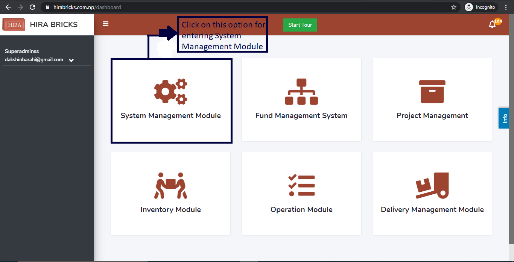
- After clicking on “System Management Module”,user will be landed on the page given below.
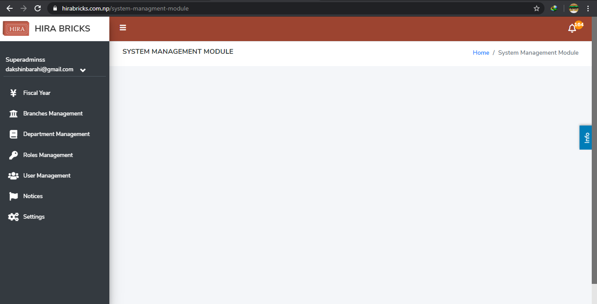
After user is landed on the dashboard of “System Management Modules”, user will be able to see some sub-modules on the left hand side of the page:
I. Fiscal Year
II. Branches Management
III. Department Management
IV. Roles Management
V. User Management
VI. Notices
VII. Settings
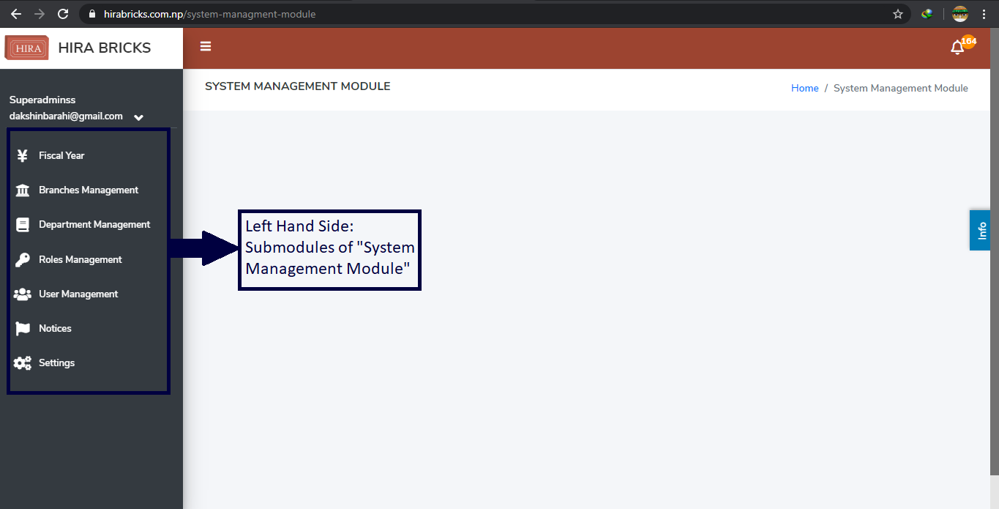
I. Fiscal Year
This sub-module provides detailed information about the completed and active Fiscal Year detail. * User can access “Fiscal Year” by clicking on the “Fiscal Year” option on the top left hand side of the System Management Module’s Dashboard as shown in the picture below.
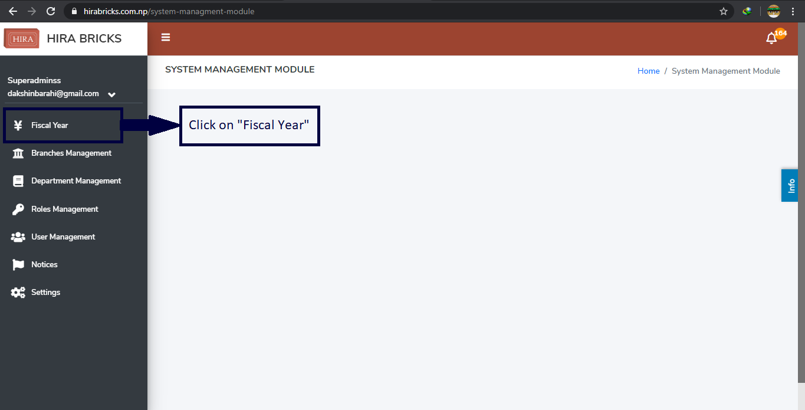
- On clicking “Fiscal Year” following page will appear as shown in the picture below. The page provides information of Active and Completed Fiscal year.
- Status as ‘Completed’ Fiscal Year cannot be edited but in any case if
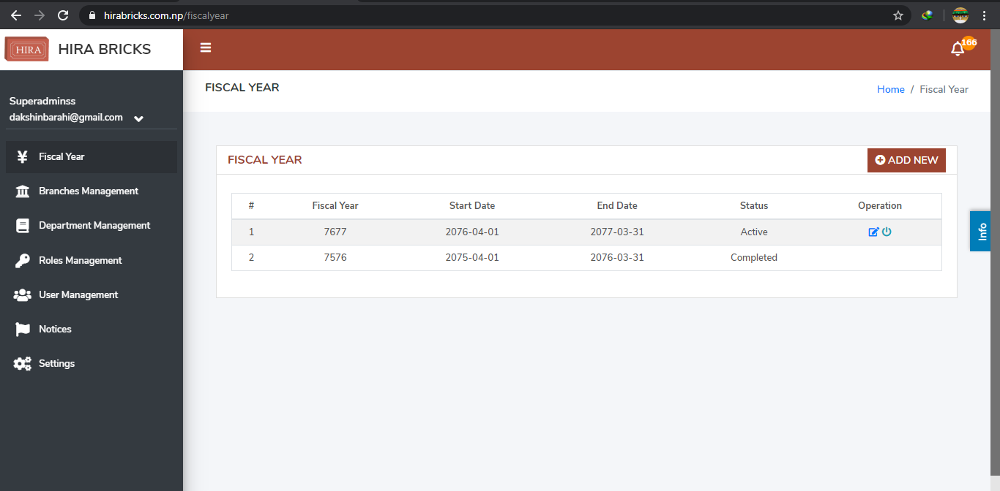
Active Fiscal year is to be edited then click on the edit button on the right hand side of the Active Fiscal Year as shown in the picture below.
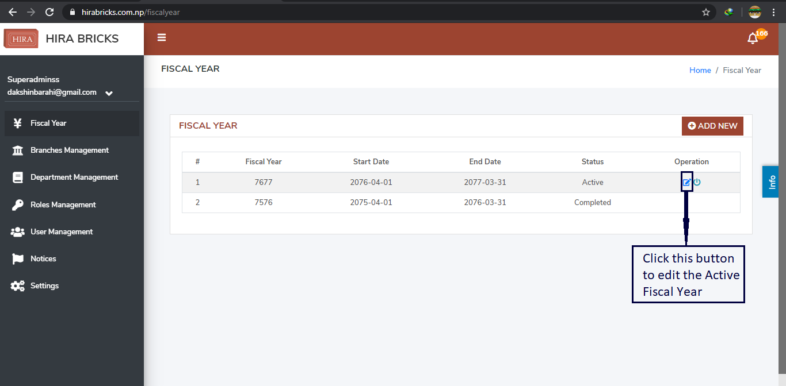
- Once the edit button is clicked for editing, the following page will appear.
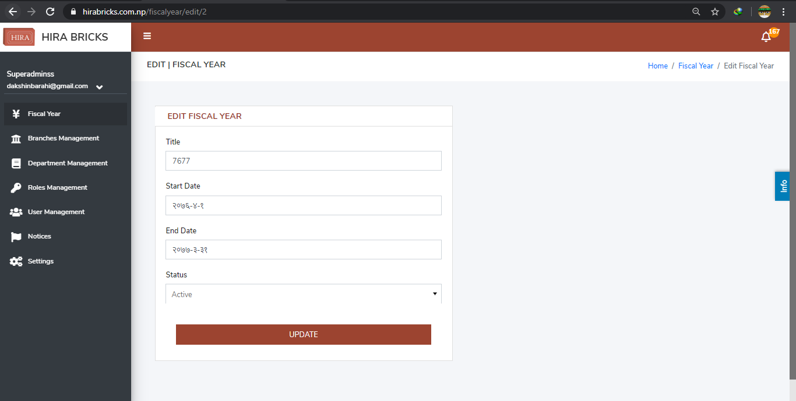
User can edit the details of the fiscal year if necessary and update it by clicking the Update button as shown in the picture below:
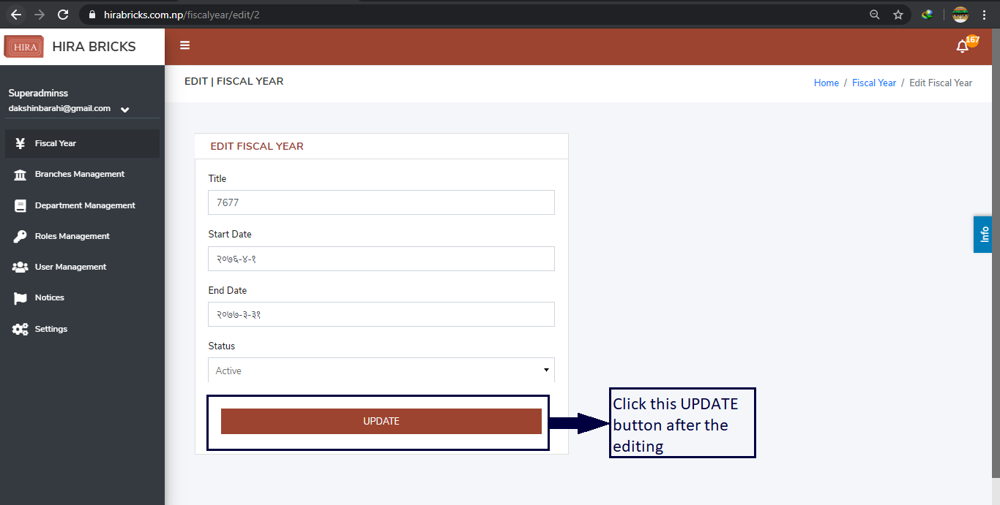
- The Active Fiscal Year is closed every year, for closing the Fiscal Year or making it as Status: Completed ; user must press the “Close Fiscal Year” button on the right hand side of Active Fiscal Year as shown in the following picture.
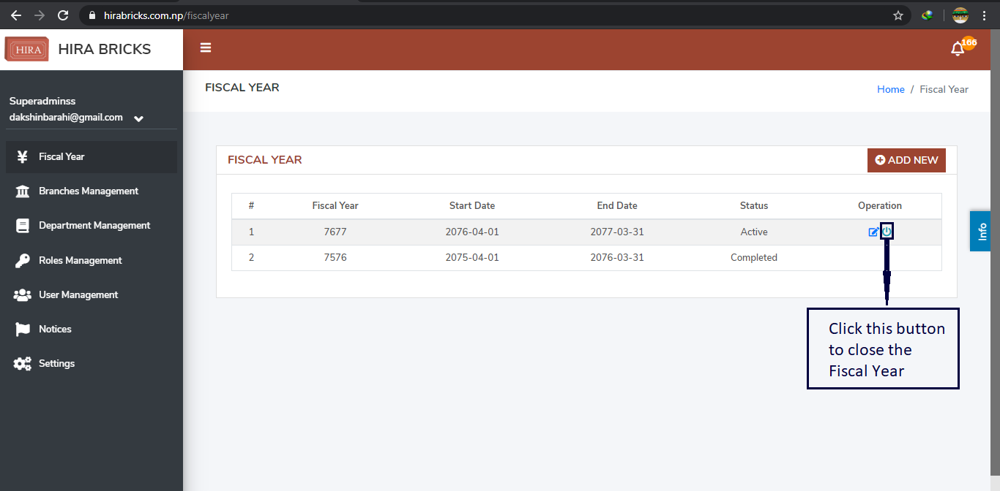
- New Fiscal will start once the previous one is finished; for creating the new Fiscal Year, user must click on the “ADD NEW” button on the top right hand side of the Fiscal Year Dashboard. This is illustrated in the picture as shown below.
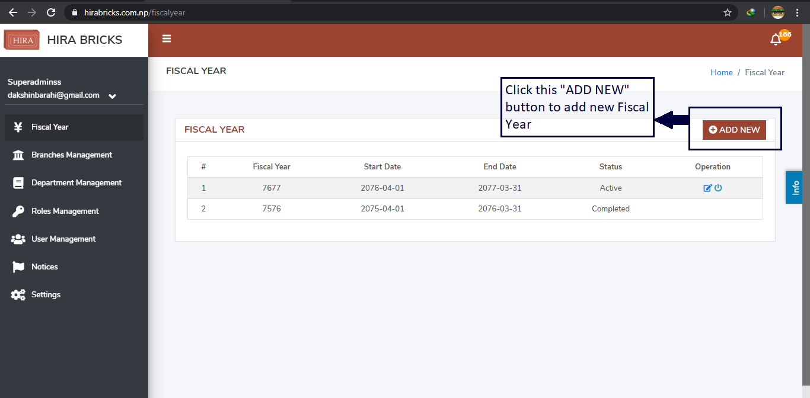
- After clicking the “ADD NEW” button, the following page will appear.
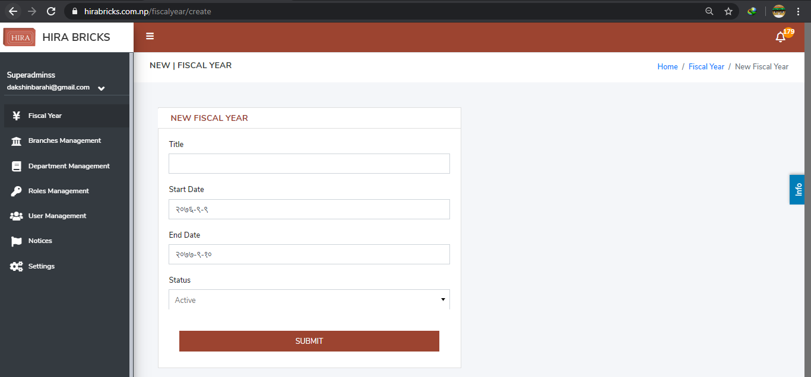
- User must insert the values/details to create the new Fiscal Year. After entering the details , the user must press the SUBMIT button. On pressing the SUBMIT button, the new FISCAL YEAR is created. The picture below illustrates the method of pressing SUBMIT button after entering the desired details to create new Fiscal Year.
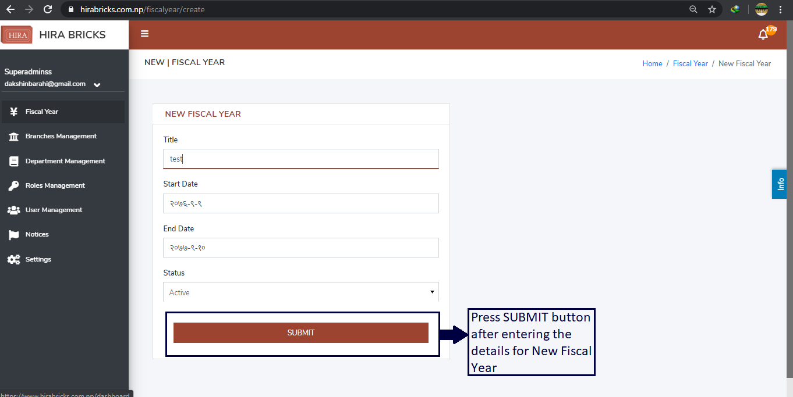
II. Branches Management
This sub-module provides detailed information about the total number of branches of the organization along with its Code, Location, Phone Number, Branch Supervisor and it provides information about whether the branch office is the Main Head Office. If needed, new Branch can be created along with its complete information in the near future.
- User can access “Branch Management” by clicking on the “Branches Management” option on the top left hand side of the System Management Module’s Dashboard as shown in the picture below.